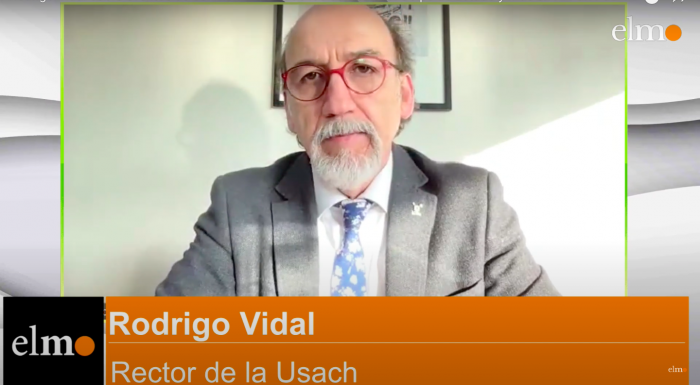
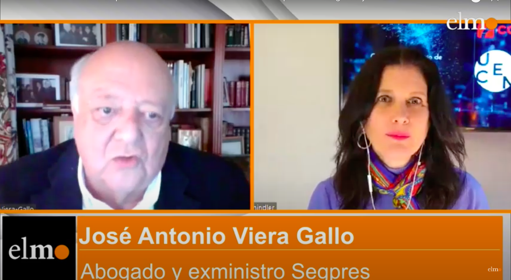
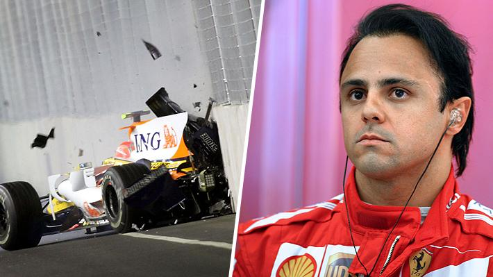
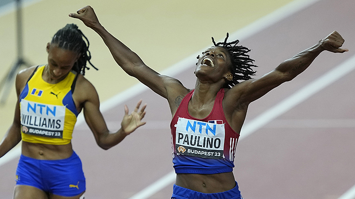
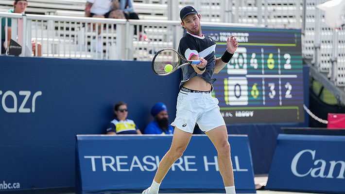
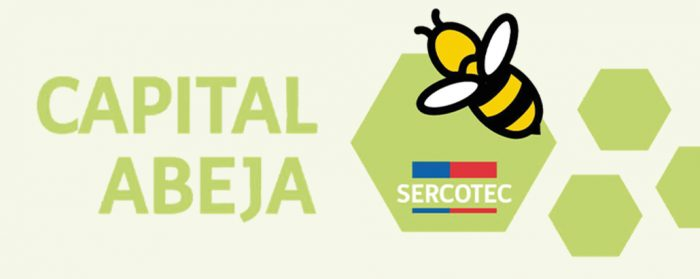

Los dos principales ríos de Santiago se desbordan tras fuertes lluvias |
General |
Los dos principales ríos de Santiago, el Mapocho y el Maipo, se desbordaron este viernes en algunos sectores después de dos días de intensas lluvias en la zona central de Chile, que forzaron al cierre de vías y la evacuación de 359 personas. | ||
|---|---|---|---|---|
Rector Usach Rodrigo Vidal: en septiembre 1973 "hubo un golpe violento a la libertad de pensamiento" |
General |
El rector de la Universidad de Santiago lamentó la violencia específica sufrida por la institución y otras universidades durante el Golpe de Estado. Vidal destacó que los ataques a estas instituciones, como la Universidad Técnica del Estado, no solo causaron daños materiales, sino que también representaron un intento profundo de socavar la libertad de pensamiento en el ámbito académico. La autoridad universitaria también se refirió al debate político e instó a priorizar a quienes necesitan mejoras en las pensiones. Además, expresó preocupación por la atmósfera en el Consejo Constitucional, ya que no ve posible una nueva oportunidad para redactar una nueva Constitución. |  | |
Viera-Gallo alerta por clima disfuncional de cara al 11 de septiembre y advierte sobre populismos |
General |
El exministro José Antonio Viera-Gallo criticó el revivir de disputas pasadas y consideró que la polarización también amenaza el debate constitucional. Dijo que el intento del PC en busca de rechazar la declaración contra el gobierno de Allende fue un error, pero no una provocación, aunque cree que lo que hizo la UDI fue completamente fuera de lugar. Aseguró que hay una caída del populismo de izquierda, mientras el populismo de derecha asciende incluso en diferentes contextos internacionales, resaltando el surgimiento de figuras como Javier Milei en Argentina. Viera-Gallo enfatizó la necesidad de un diálogo respetuoso, de no negar las violaciones a los derechos humanos cometidas en dictadura, y recomendó a Chile Vamos no mimetizarse con el Partido Republicano para afrontar los desafíos actuales y futuros. Además, destacó la importancia de mantener la descentralización del país, pero con controles regionales sólidos. |  |
Por qué el brasileño Felipe Massa exige que se le entregue el título de 2008 que se llevó Hamilton |
Deporte |
El brasileño acusó a la Federación Internacional de Automovilismo de haber conspirado en su contra para evitar que fuera proclamado campeón mundial el 2008, y sostiene que es el "legítimo" ganador del título. |  |
|---|---|---|---|
Corría descalza por falta de recursos y hoy es campeona mundial: La historia de la estrella que estará en los Panamericanos |
Deporte |
Marileidy Paulino dominó con autoridad los 400 metros planos en el Mundial de Atletismo que se disputa en Budapest. Con un tiempo de 48.76 se quedó con la medalla de oro sacándole una diferencia de un segundo a la segunda. |  |
Nicolás Jarry ya tiene rival para debutar en el US Open: Quiénes asoman si avanza y el cuadrol |
Deporte |
El galo tiene 19 años y es una de las promesas de su país. Actualmente posee su mejor ranking. No tiene títulos a nivel ATP, pero sí en Challenger, donde conquistó tres trofeos, dos este año en marzo y abril pasado. |  |
La importancia del emprendimiento en las universidades de América Latina |
Negocios |
El emprendimiento es un elemento clave para el desarrollo económico y social de un país. Aunque esta situación puede variar, habitualmente observamos una menor presencia de emprendimiento en los sistemas universitarios de los países donde existe una menor cultura emprendedora. Esto puede deberse a diversos factores, como la falta de recursos y apoyo para iniciar proyectos empresariales, una educación orientada hacia empleos tradicionales o una cultura que valora más la estabilidad laboral. Por otro lado, en países con una cultura emprendedora más arraigada, es probable encontrar una mayor presencia y apoyo al emprendimiento en las instituciones educativas. Estos países suelen brindar más recursos, programas de incubación y formación empresarial, así como una mentalidad más abierta hacia el riesgo y la innovación. | |
|---|---|---|---|
Estudio revela que la desconfianza es el principal obstáculo para innovar en Chile |
Negocios |
Con el fin de monitorear la evolución de la predisposición innovadora y emprendedora en el ecosistema de Chile y producir información válida y confiable para orientar el diseño de políticas públicas sobre esta materia, ForoInnovación y Feedback realizaron un nuevo Índice de percepción de actitud innovadora y emprendedora en los chilenos y chilenas. Los principales resultados provienen del análisis de datos de cerca de 7.000 encuestas, donde se preguntó a hombres y mujeres mayores de 18 años, con representación en las 16 regiones de Chile y todos los estratos socioeconómicos. De toda la muestra, se concluyó el mayor hallazgo en esta materia: de una escala de 1 a 100, el índice de actitud innovadora y emprendedora de los chilenos y chilenas es de 63.7. | |
| Capital Abeja para emprendedoras mujeres: Conoce los requisitos y pasos de postulación | Negocios |
Capital Abeja es un fondo concursable de Sercotec que promueve la creación de nuevos negocios liderados por mujeres. Las inscripciones para recibir el Capital Abeja cierran este miércoles 28 de junio y puedes postular a través del sitio web www.sercotec.cl Capital Abeja Emprende es un programa ejecutado por el Servicio de Cooperación Técnica (Sercotec) con fondos del Servicio nacional de la Mujer y la Equidad de Género. ¿Qué apoyo entrega Capital Abeja? Este fondo entrega un subsidio de $3,5 millones para concretar las actividades detalladas en el plan de trabajo. |  |